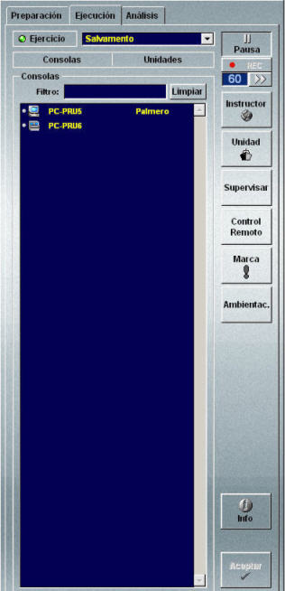
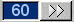
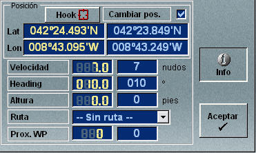
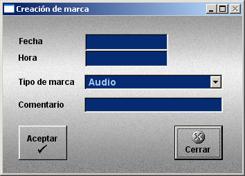

Ejecución de Ejercicios
En la Pantalla de Presentación Cartográfica del instructor, seleccionando la solapa Ejecución en el Área de Preparación, Ejecución y Análisis de Ejercicios se accede a la ventana de Ejecución y Control de Ejercicios.

Desde esta ventana el Instructor puede acceder a las siguientes funciones:
- Seleccionar y configurar un ejercicio para su ejecución
- Si el instructor asigna una unidad a una consola, cuando dicha consola se conecte al ejercicio, pasará a controlar automáticamente dicha unidad.
- Si el instructor asigna Cualquier unidad a una consola, cuando dicha consola se conecte al ejercicio podrá controlar cualquiera de las unidades que se le asignaron durante la Preparación del ejercicio, y si no tiene ninguna asignada, podrá controlar cualquiera de las existentes en el ejercicio. Esta opción sólo está disponible para la consola de instructor.
- Si el instructor selecciona No participa en el ejercicio la consola no podrá participar en el mismo.
- Iniciar, parar y continuar la ejecución del ejercicio
- Grabar ejercicio
- Controlar el tiempo de avance
- Presentar la lista de consolas
- Presentar la lista de unidades
- Controlar una unidad
- Terminar el control de una unidad
- Supervisar una consola
- Acceder al control remoto de consolas
- Consultar / modificar los datos de las unidades
- El cambio de posición de la unidad sólo se produce si casilla Cambiar Pos. está marcada.
- Sólo se puede asignar rutas a las unidades que tienen plataforma de tipo Simple.
- Las unidades controladas, sólo se pueden cambiar de posición.
- Crear marcas
- Filtrar unidades de ambientación
- Consultar y cambiar datos de la base de datos
La parte superior de ventana contiene el campo Ejercicio que al desplegarlo muestra la lista de todos los ejercicios disponibles en la base de datos. Al seleccionar uno de estos ejercicios, se muestra al operador el siguiente diálogo, en el que puede resolver conflictos de asignación de unidades a consolas (puentes):

En este diálogo se listan todas las consolas incluidas en el ejercicio, y para cada una de ellas, el instructor podrá seleccionar si participa o no en el ejercicio y la unidad o unidades que podrá controlar durante la ejecución del mismo.
Una vez que el instructor realiza esta asignación, debe pulsar Aceptar para comenzar la carga del ejercicio para su ejecución. Si pulsa Cancelar, se cierra este diálogo y no se carga el ejercicio.
También se puede cargar directamente un Ejercicio que haya sido salvado durante una ejecución anterior. Es decir, estando un Ejercicio en Ejecución, el Instructor puede grabarlo mediante el menú Archivo → Ejercicio → Ejecución → Salvar (o Salvar como...), y puede recuperarlo mediante la opción de menú Archivo → Ejercicio → Ejecución → Cargar. En este caso la ejecución del Ejercicio se inicia con la misma asignación de consolas del Ejercicio salvado.
Pulsando el botón Avance el instructor inicia o continúa la ejecución del ejercicio al que está conectada la consola, y su etiqueta cambia a Pausa. Asimismo, pulsando el botón Pausa, el instructor detiene la ejecución del ejercicio, y su etiqueta cambia a Avance.
El estado del ejercicio se indica mediante un led que se enciende (en verde) cuando el ejercicio se está ejecutando y se apaga cuando está en pausa o no hay ejercicio en ejecución.
Mediante el pulsador Rec, el instructor puede activar o detener la grabación de la ejecución del ejercicio. Mientras la grabación está activa, el led rojo de este botón parpadea.
Para activar o detener la grabación hay que parar el ejercicio ya que este pulsador sólo está disponible cuando el ejercicio está en pausa.
Los ejercicios grabados se pueden guardar en ficheros mediante la opción Archivo → Ejercicio → Análisis → Salvar (o Salvar como…) del menú principal de la Pantalla de Presentación Cartográfica. Estos ficheros se utilizan para la repetición y análisis del ejercicio (ver apartado Análisis de Ejercicios).
Para evitar la pérdida accidental de ejercicios grabados, el simulador guarda de forma automática un fichero de análisis con el mismo nombre del ejercicio que está en ejecución. Este fichero se actualiza periódicamente. No obstante, al terminar la ejecución del ejercicio se presentará al instructor la siguiente ventana:

Pulsando Aceptar el instructor puede guardar el fichero (actualizado hasta el momento de la finalización) con el nombre que prefiera.
Mediante este control, el instructor puede especificar un tiempo (en minutos) y pulsando el botón “>>” adelantar el reloj del simulador el tiempo especificado, sin que este adelanto afecte a la situación de las unidades, que permanecen en el mismo sitio desplazándose a su mismo ritmo.

Pulsando el botón Consolas se presenta la lista de consolas que intervienen en el ejercicio que está en ejecución. Para cada consola se presenta su estado, su identificador y el identificador de la unidad que controla (si existe). El estado de la consola se presenta mediante un led que está encendido (en verde) si la consola está conectada al ejercicio.
Pulsando el botón Unidades se presenta la lista de unidades que intervienen en el ejercicio que está en ejecución. Para cada unidad se presenta su estado y su identificador. El estado de la unidad se presenta mediante un led que está encendido (en verde) si la unidad está siendo controlada.
Seleccionando una unidad en la lista de unidades y pulsando el botón Unidad, el instructor pasa al modo de Control de Unidad. En este modo el instructor participa en el ejercicio como un alumno más, asignado a dicha unidad, aunque mantiene la capacidad para ejercer todas las funciones de control del ejercicio. Este modo es de utilidad para el gobierno de unidades no asignadas a alumnos y para la supervisión en detalle del estado de una unidad en particular. En este modo la Conning Display muestra los paneles y equipos de la unidad controlada.
Al pulsar el botón Instructor se pasa al modo de Control del Ejercicio terminando el control sobre la unidad. En este modo el instructor observa la situación global y puede realizar funciones de control del ejercicio como iniciarlo, pararlo, consultar datos generales de las unidades y del escenario, modificar y replicar unidades, asignar daños, etc. En este modo el instructor no dispone de Conning Display de ninguna unidad.
Seleccionando una consola de la lista y pulsando el botón Supervisar, se muestra la siguiente ventana.

En esta ventana se puede seleccionar la unidad y el equipo de la consola que se quiere supervisar. Una vez seleccionados, al pulsar Aceptar, el instructor pasa al modo de Supervisión de la Consola. En este modo se pueden observar todas las acciones ejecutadas por el alumno que controla la consola seleccionada, pero en ningún se caso puede actuar ella.
Si la consola seleccionada tiene más de una unidad asignada, el campo Unidad despliega la lista de todas las unidades asignadas a la consola.
Si la consola seleccionada tiene más de un equipo que se pueda supervisar, el campo Supervisar despliega la lista de todos estos equipos.
Al pulsar el botón Control Remoto se muestra la ventana de control remoto que permite encender y apagar cada uno de los equipos del simulador desde la estación del instructor (ver el apartado Control Remoto de Consolas en el Manual de Administrador).
Al seleccionar una unidad en la lista de unidades y pulsar el botón Info se muestra la siguiente ventana.

Esta ventana contiene una columna con los datos actuales de la unidad seleccionada y otra columna en la que se pueden introducir nuevos datos para modificar los actuales.
Los datos de longitud y latitud se pueden introducir manualmente o pulsar el botón Hook para introducir automáticamente la posición del hook.
Para confirmar el cambio de los datos actuales por los nuevos datos introducidos, hay que pulsar el botón Aceptar, teniendo en cuenta que:
Al pulsar el botón Marca, se abre la ventana de Creación de Marca. Esta ventana permite introducir, la fecha, la hora y un comentario, así como elegir el tipo de marca entre las dos disponibles, General y Audio. Al pulsar el botón Aceptar en esta ventana, se guarda un registro con los datos incluidos en la ventana, que durante una posterior reproducción del ejercicio servirá como marca de un punto (instante) de interés. Si se pulsa el botón Cerrar se cierra la ventana y se descartan los datos introducidos.

Al pulsar el botón Ambientac. en la lista de unidades se filtra aquellas que hayan sido definidas como unidades de ambientación.
Durante la ejecución de un ejercicio, el instructor puede seleccionar la solapa Preparación y consultar o modificar los datos y ejercicios. Los cambios efectuados afectarán al ejercicio en ejecución y se perderán al cerrar la aplicación, a menos que el operador salve el archivo de base de datos mediante la opción Archivo → Ejercicio → Preparación → Salvar del menú principal (ver apartado Menú Principal).